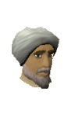
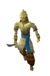

")
Al Kharid
Introduction | Location | Points of Interest | Personalities
Quests | Dangers in the Desert | Miscellaneous
Quests | Dangers in the Desert | Miscellaneous
Introduction

The town itself is a mixture of white stone and marquees, patrolled by amorous camels and ruled over by the Emir. Al Kharid guards defend him with their lives from within his palace, suspiciously eyeing any trespassing stranger that happens to stumble in.
Location

Westwards is Lumbridge, from when you gain access to Al Kharid. There is a small fee to pass through the tollgate that separates the two towns, although anyone who has been a great help to the Emir may pass freely.
Immediately to the south is Shantay Pass, guarded by its surly namesake, Shantay. Beyond this lie the members' areas of the Kharidian Desert, Menaphos and Sophanem, amongst others.
On the west coast is a shipmaster, waiting to take valiant adventurers to Daemonheim, on the east coast of the Wilderness, where they can train their Dungeoneering. Passage is free.
Points of Interest

The fire altar can be accessed, with the right equipment and skills, through a mysterious scattering of ruins to the north-east.
A mine, filled with scorpions, lies to the north. Apart from offering valuable combat experience, these scorpions guard a variety of ores for extraction. High Mining levels may be necessary to get the best from this site, while a bank is some distance away in south-west Al Kharid.
Osman, spymaster to the Emir, is an interesting man to know, especially for budding thieves. Those who have rescued Prince Ali might like to try their hand at the Sorceress's Garden.
The extraordinary Ali Morrisane, bazaar merchant, entrepreneur and occasional trickster lives north of the town, where members may purchase overpriced trinkets or be sent on noble quests.
One of RuneScape's few tanners can be found to the west of the town.
Personalities
![[image: the emir with question mark on him]](../../img/main/kbase/npc/area_guides/chathead/mystery_emir.gif "the emir with question mark on him") |

Chancellor to the Emir and the financial brains behind Al-Kharid's economy, Hassan likes to keep a close eye on all the affairs of the palace. Since Prince Ali's kidnapping, he has also begun working closely with Osman, the Spymaster.
|
|
| Chancellor Hassan can be found in the throne room of the Emir's palace. |

Few people know anything about Osman, which is a good thing for him because he would be the first target for anyone looking to harm Al Kharid. His latest task is tracking down Prince Ali, and he has not hesitated to send his own daughter to achieve this. He is also curiously knowledgeable about sq'irks, which someone must surely be interested in.
|

Ali has thumbs, fingers and toes in many pies around Runescape. Running his business out of a shabby cart to the north of Al Kharid, Ali hopes to one day see the Morrisane brand become a household name. Employing scruffy urchins to hand out Morrisane fliers and throwing himself into hare-brained schemes (a magic carpet airline?), Ali would sell his family for a fortune - if only he could find anyone to buy them all.
|
|
| Osman can be found looking shadowy outside the Emir's palace. | Members can find Ali Morrisane watching his stall in the north of the town. |

Father Reen, like many of his fellow monks of Saradomin, knows many of the plots that the followers of Zamorak are involved in. He is especially concerned about one in particular, but needs a hero of proven skill to help him out and save the world.
|

Al is a poor, depressed camel who has fallen in love with Elly, another camel, who knows nothing of his love. He has composed poems of incomparable beauty (well, pretty good poems for a camel, anyway) devoted to her, but she will never know...
|
|
| Members can find Father Reen south of the Bank. | Al the Camel can be found musing upon how like a rose Elly is next to the Bank. |

Elly is greatly attracted to Ollie, a particularly manly camel that she watches from a distance. She loves his great muscles and his speed across the desert. Sadly for Elly, Ollie is a bit aloof and unapproachable, so she may never realise her dream.
|

Ollie is massive and masculine by camel standards, but he dreams only of being able to fly. He's a bit like a young boy watching the Gnome Airlines gliders for the first time, staring in wonderment and fascination at the amazing flying machines. As a result of this, he's quite oblivious to almost everything else around him.
|
|
| Elly the camel can be found gazing doe-eyed at Ollie from near Ali Morrisane's stall. | Ollie the Camel can be found watching the gnome gliders fly about. |

Faruq is an enterprising individual with an eye for useful items no one ever knew they needed. Unlike Ali Morrisane, who sells his wares nearby, Faruq has no need for fancy advertising gimmicks, nor does he use...dubious methods of sourcing his curious goods.
|
||
| Faruq can be found operating his stall next to Ali Morrisane's. |
Quests
The following quests can be started in Al Kharid:
- Prince Ali Rescue
- The Feud (Members)
- Rune Mechanics (Members)
- Shadow of the Storm (Members)
Dangers in the Desert
|

Al Kharid's warriors defend the palace from invaders, but they are quite poor soldiers. This is very probably why Prince Ali was able to be kidnapped from under their very noses. They are devoted to the Emir, though, and are no doubt filled with shame at their failure. As the palace is a multicombat zone, they may well band together in defence.
|

Scorpions are drawn to the heat of the desert, but they need shade in order to survive the hottest parts of the day. Because of this, the greatest concentration of scorpions is to the north in a ravine commonly known as the Scorpion Mine. They can be dangerous to young adventurers, but they rapidly lose their aura of danger.
|
|
| Al Kharid warriors can be found in the Emir's palace. | Scorpions can be found in the mine north of town. |

The Shantay Pass is all that lies between Al Kharid and the great mass of the Kharidian Desert, where bandits and nomads make their homes. The Pass, therefore, needs a competent set of guards to ensure the security of Al Kharid.
|
| Shantay guards can be found at Shantay Pass. |
Miscellaneous
- The Emir's palace features a cabbage on a table in the west and a jug of water on a table in the east. On top of this, Hassan will give you another jug of water if you seem a bit parched.
- Someone has carelessly left their leather boots in a house north of the Emir's palace.
- The sorceress that recently moved into the house south of the city has not given her apprentice time to clean up properly, so there is still a bronze mace lying on the floor.
- In order to travel into the Kharidian Desert you will need to trade with Shantay. In addition to needing a Shantay Pass, you should also make sure you purchase a full set of desert clothes and a waterskin.
- After you have completed The Feud, you can return to Ali Morrisane to play Rogue Trader.
- North of the Duel Arena is the Mage Training Arena (members).
- If you want to talk to Al, Elly or Ollie you will need a Camulet, which you get during Enakhra's Lament (members).
- Slayers tasked with killing desert strykewyrms will want to head over the stile along the fence to the east of Al Kharid, just south of the entrance to the Duel Arena.

More articles in
Cities and Towns
|
|